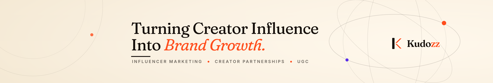
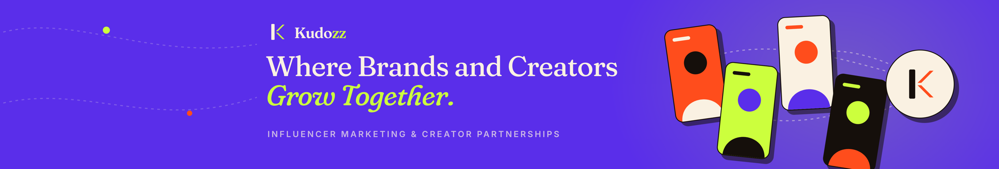
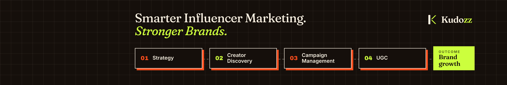
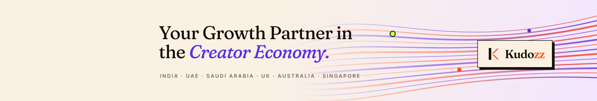

03 · Bold Editorial

Shown at LinkedIn display size, 1128 × 191. Upload files are 2256 × 382 (same ratio, 2× for sharp screens).
01 · Premium Minimal

02 · Creator Culture

03 · Bold Editorial
04 · Marketing Ecosystem

05 · Future-Focused
